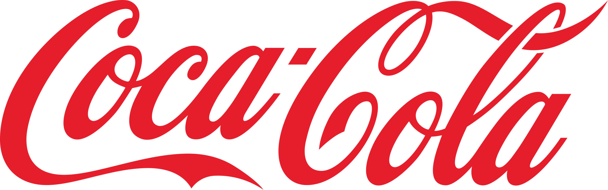
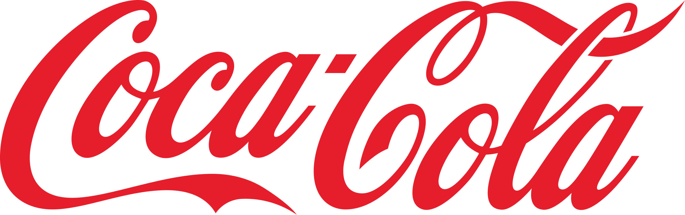

Join the Movement Against Plastic Pollution
Plastic waste is destroying our oceans. It's time to act.
Facts
Learn how plastic pollution is impacting our world.
- Plastic pollution is a global crisis. Every year, millions of tons of plastic enter our oceans, harming marine life and ecosystems. Microplastics—tiny plastic particles—are especially dangerous as they enter the food chain, affecting both marine species and human health.
- Only 1% of plastic can be found floating in the water; 94% has already sunk to the seafloor. Small plastic items and microplastics are virtually impossible to reach, especially when they are deep in the ocean.
- One in three fish caught for human consumption now contains plastic. Ninety percent of plastic is made from fossil fuels. Producing one ton of plastic generates 2.5 tonnes of carbon dioxide. Our actions have consequences, and they are damaging both to us and the environment.
- Every year, 100,000 marine mammals and turtles, as well as 1 million seabirds, are killed by the plastic we throw into the ocean.
- Plastic is a strong, flexible, and durable material. The same qualities that make plastic useful for making life easier also make it virtually indestructible. As a result, plastic can last for over 450 years, and we can still see it in its various forms. However, plastic never completely disappears—it only breaks down into smaller and smaller pieces. Therefore, every single piece of plastic we produce still exists in the form of microplastics.
Our Goals
- Raise awareness about plastic consumption and microplastics
- Inform people of the harm of microplastics
- Advocate for people to consume less plastic and choose climate-friendly alternatives
We want to stop plastic from entering the ocean for the sake of our wildlife, environment, and the world. All the money we collect goes towards cleaning up beaches and the ocean.
Take Action
Small changes make a big difference.
- Use plastic-free skincare & cosmetics.
- Wash clothes in microplastic-filtering laundry bags.
- Use reusable, non-plastic packaging.
- Avoid non-sustainable brands
- Advocate for stronger regulations.
Support Our Cause
Every donation helps us fight plastic pollution.
About us
WaveGoodbyeToPlastic is a non-profit organization raising awareness about the problem of plastic pollution in the ocean. Our goal is to inform people about the consequences of using plastic and give advice on how to live a more sustainable life. With the money that we raise from our donations on our website, we will organize meet ups where people can volunteer to help clean beaches across the UK. On our website we have some tips and tricks on how to reduce plastic consumption in your daily life and choose more climate friendly options.
More Info
Learn more about plastic pollution and how you can make a difference.
- Read more in our pamphlet, exclusively only given out in our in person event
- Follow our sosial media accounts: #WaveGoodbyeToPlastic
- Plastic Pollution Facts
- How Plastic Enters the Ocean
- NOC Ocean Plastics
Brands you should avoid


 
